Status: experimental. See the framework audit for implemented contracts and remaining work. The original Kit remains a separate supported implementation.
Objective#
An author writes gameplay as ordinary operations over one coherent world:
step(frame at T, input batch for T+1) -> frame at T+1 + occurrencesThe runtime controls input delivery, stepping, history, correction, and presentation scheduling. Single-player uses the same simulation contract. The author still chooses game rules, authority, prediction scope, and which effects may be shown speculatively.
Input sampling and intent delivery have separate contracts. Scheduled controls belong to a simulation tick and can arrive too late to use. Discrete actions carry sequence IDs and settled authority results. A game can classify actions as scheduled or receipt-time through a versioned action schedule: for example, preserve a shot's deadline while delivering an interaction without that deadline. Prediction still reconciles against the authority's recorded decision. Receipt-time delivery does not override game predicates or FIFO order.
Decisions for the experiment#
- Simulation state is independently restorable. Entity membership, allocation counters, timers, and RNG are state. Rendering resources and connections are outside the frame. Immutable definitions are content-versioned inputs to a session; mutable configuration changes must be tick-stamped.
- History follows gameplay dependencies. Health that gates movement belongs in simulation history even when its network updates are infrequent. Being historical, being authoritative, and being replicated are separate policies.
- Complete state per simulation group. Cross-entity mutation is ordinary code. The default group is the public world; an authored client projection can now remove nonmembers and retain explicit timestamped boundary values. Replay restores that complete group. Multiple independent groups remain later work; see the implemented group contract.
- Typed state before code generation. The first API is usable without scriptgen. Future generated authoring must lower onto a documented public API.
- Presentation receives copies or explicitly read-only views. It never temporarily overwrites simulation fields. The initial API uses copies because Odin does not provide a general deeply immutable borrowed view.
- Independent library and game ports. No aliasing the new API onto Kit's session/lane internals, no replacing old games, and no hidden fallback between implementations. Engine bindings and suitable pure utility algorithms may be shared through explicit dependencies.
These principles are informed by the complete-state and independent-step contracts in GGPO and Quantum. They do not require adopting either product or requiring an ECS authoring model.
Layer boundaries#


The core, canonical codecs, presentation, authoritative and deterministic P2P runners, owner streams, diagnostics and coordinated recovery are implemented. Their supported envelopes differ; engine physics remains an explicit cooperative policy rather than a deterministic rollback solver.
Implemented package boundaries:
| Package | Responsibility | Status |
|---|---|---|
replay |
Typed frames, local timeline, bounded history, pools, RNG, events | Value storage, transactional replay/correction, audit captures |
replay/schema |
Logical fields, canonical codecs, hashes, field diagnostics | Runtime field programs, tagged unions and transactional codecs; static codec generation is optional future work |
replay/telemetry |
Bounded admitted-session round-trip probes and reports outside rollback state | Core, Godot adapter, native/browser tally and native migration gates tested |
replay/view |
Interpolation and predicted/confirmed/canceled event presentation | Journals, rebase, one-shot/cue retention, pose/phase sampling |
replay/authority, replay/provision, replay/recovery |
Authority terms, enrollment, checkpoint transfer and migration | Authenticated registration, durable CAS, leases and recovery protocols |
replay/net |
Seats, controls/actions, facts/snapshots, correction/reconnect | Scheduling policies, prediction/recipient groups, deltas/compression and recovery ledgers |
replay/p2p |
Deterministic input exchange, rollback and participant recovery | Fixed-roster runner, archives, spectator recovery and authenticated provisioning |
replay/owned |
Cooperative owner-driven observations and transfer | Explicit ownership/version/producer lineage and action context |
replay/transport |
Packet interface and deterministic fault model | Implemented and tested |
replay/godot |
Godot transport/view/scene integration | Session, Party/Room, P2P setup, scene/body/audio adapters and tools |
replay/play |
Replayable movement, collision, abilities, inventory helpers | Value-based motion/query, timers, gun/effect/director helpers |
Create subpackages only when implemented responsibility warrants them. The table does not reserve a permanent layout or require empty scaffolding packages.
Current local API#
Timeline(State, Input, Event) is a runtime owner. State, Input, and Event
must recursively satisfy value_supported. The runner allocates bounded history
and equally sized replay scratch during init; normal stepping and correction
use those allocations. User callbacks must also avoid hidden allocations/state
if the game needs that property.
| Operation | Contract |
|---|---|
init(&timeline, Frame(State){...}, step, cfg, epoch) |
Establish a checkpoint at any tick, including zero; reject unsupported types and invalid config before allocation |
advance(&timeline, input) |
Execute tick head+1 in scratch and commit on success |
current(&timeline) / read(&timeline, tick) |
Return a frame by value plus an existence flag |
revise_input(&timeline, tick, input) |
Replace the complete input batch at that tick and replay through the current head; commit the entire suffix only on success |
confirm_through(&timeline, tick) |
Monotonically settle state through that tick; subsequent input revision cannot alter it |
correct(&timeline, truth, events) |
Atomically ingest complete authority state/events and replay the speculative suffix |
reset_checkpoint(&timeline, frame, epoch) |
Explicit resync/recovery; discard old speculative history within an authorized epoch contract |
rewind(&timeline, tick) |
Keep that frame and discard later speculative history; committed playback requires a fresh timeline/epoch |
audit(&timeline, from_tick) |
Replay recorded inputs without committing; report first differing tick and state/event category |
copy_events(&timeline, tick, dst) |
Copy the complete occurrence batch or report required capacity without a partial copy |
destroy(&timeline) |
Release runtime storage; safe on a zero/destroyed timeline, invalid inside a step |
Tick semantics: input for T transforms state at T-1 into state at T. A starting
checkpoint has no recorded generating input. Revising that checkpoint is an
Initial_Frame error; revising a tick whose predecessor fell out of history is
History_Missing. Neither case silently replays from current state. Near the
u64 tick limit, advance reports Tick_Overflow.
Config.history_frames counts stored frames, including a checkpoint. A history
of N frames can replay at most N-1 transitions without another checkpoint.
Values must be 2..4096. events_per_tick is 0..4096; zero intentionally disables
event capacity. DEFAULT_CONFIG is 128 frames and 32 events per tick. These are
prototype resource limits, not supported multiplayer scale envelopes.
Result.steps counts successfully staged steps, even if a later step failed.
Result.tick is the failing tick or final processed tick. Only a successful
revision commits staged results. Audit never commits.
The starting checkpoint is confirmed. A runner explicitly advances the simulation
confirmation frontier when authority settles state. revise_input rejects
committed ticks and rewind rejects movement before the frontier. Copying an old
frame into a new timeline remains valid for playback inspection or an authorized
recovery protocol; neither operation is an authority election.
Simulation rules and transaction boundary#
A step may read its state, input, tick, and fixed definitions, and mutate state
through ordinary Odin functions. It must not access wall clocks, device state,
Godot node transforms, ambient random generators, persistent storage, sockets,
or mutable globals. Pool pointers and Step pointers must not escape the call.
The candidate tick is a value copy. If abort is called, the event journal
overflows, or an event ID duplicates another in the tick, the runner discards
that candidate. A revision stages its complete suffix before committing:
failure at tick 9 cannot leave ticks 5..8 changed in a supposedly rejected replay.
This protects managed state. It cannot reverse audio, I/O, mutations through global pointers, or other side effects in a callback that violates the contract. The type gate excludes pointer-bearing frame values but does not prove callback purity. Audit is a diagnostic supplement, not a static effect system.
Ordinary unsuccessful gameplay actions should validate before mutating. abort
rejects the complete tick, including other players' actions in that batch. Use it
for inability to simulate the tick safely, not as the default response to a
player trying an unavailable item. The loot example simply ignores an invalid
take and continues with the other player's input.
Entity identity and lifetime#
Pool(T, N) stores entities and allocation metadata inside the frame. Insertion
chooses the lowest reusable index and returns Handle(T){index, generation}.
Removal clears the payload. Reusing a slot increments its generation; a slot
whose generation is exhausted is retired. Restoring the frame restores entity
existence and allocation order as well as payloads.
Handles are typed and local to their pool/world. Two pools of the same type still require the caller to choose the right pool. They are not yet global network IDs. A rewound alternate branch can recreate an ID; a presentation object must resolve against the current view and must not treat a stale handle as a global lifetime guarantee. Wire IDs, provisional spawn identity, and branch-aware presentation reconciliation are explicit later milestones.
Occurrences#
emit(ctx, source, key, payload) records an Occurrence(Event) with identity
(epoch, tick, source, key). The author supplies a semantic source and key; the
loot example combines the action sequence and an effect slot. Reordering two
unrelated emits does not change identity. Duplicate keys fail the tick instead
of ambiguously correlating two occurrences.
Replaying replaces the tick's occurrence batch. It does not invoke effect callbacks. The presentation journal compares previous and replacement batches by ID and payload and produces begin/update/cancel/confirm notifications. Confirmation follows an explicit authority/commit frontier and watched effects also wait for their display tick. Effects that require durable external delivery still need a separate committed outbox and idempotent consumer.
The epoch scopes IDs. Starting a timeline with epoch 2 does not prove that it is the legitimate authority. Leader selection, stale-packet fencing, input sequencing, and reconnect credentials belong to the session layer.
Snapshots, wire state, and determinism#
The frame is a typed in-process value. Copying it makes a detached checkpoint, and another timeline can resume from it. Canonical value/envelope codecs, durable saves and the native coordinated recovery profile now exist. Padded structs are safe to copy; audit uses logical reflection equality rather than a raw memory comparison. NaNs compare unequal and will surface in audit; the network schema enforces finite values and the model validates gameplay-specific input and state policies.
The canonical schema describes logical fields independently of compiler layout and applies bounds. Its envelope carries schema/content/version/epoch metadata. Authority/public codecs and explicit recipient views are implemented, including state/control/event filtering and separate prediction groups. Alternative replica carriers and broader migration/deployment profiles remain additional work. A client's visibility-filtered snapshot is not a complete migration backup.
Strict P2P mode will additionally require cross-target reproducibility: math, collision algorithms, iteration order, allocation, RNG, and input ordering. The initial integer duel now has native arm64/WASM execution equality and a separate peer-input runner. That evidence is scoped to its tested corpus, not arbitrary models or every target; see P2P. Server-authoritative mode can tolerate numerical discrepancies but still needs replayable state and useful correction limits.
Physics, sessions, and migration#
Simulation collision must use frame-owned dynamic state. Static level assets can be immutable query inputs; moving doors/platforms must have historical state. An ordinary Godot physics world is not made replayable by saving node poses. Initial movement primitives will use explicit 2D kinematics and collision math. The owner-streamed profile now has latest-observation admission, saved owner/handoff state, and Godot 2D/3D adapters. It records accepted engine outputs; it does not replay Godot contact solving. A separate Slopball port exercises the initial profile, including planned/crash physics migration; broader scenarios remain pending.
A complete migration checkpoint combines a full authority frame, content/protocol versions, session membership/ownership, command deduplication frontiers, and an authority term. Host selection and transport rendezvous remain separate services. They must establish a unique accepted term before simulation resumes. Read the migration milestone for failure cases and acceptance gates.
Diagnostic and performance direction#
Start with value copies and explicit step order. Measure snapshot bytes, copy cost, replay cost, event backlog, and allocation pressure before implementing page sharing or incremental snapshots. A typed arena or component store can replace fixed pools without changing the frame contract, but requires restore, allocation-order, and codec tests first.
Extend audit to emit a path such as players[1].inventory[3].count, both values,
the triggering input, and a reusable reproduction file. Allow deliberate replay
every frame during offline play. Keep multiplayer fault schedules recorded so a
failure is reproducible independently of real packet arrival timing.